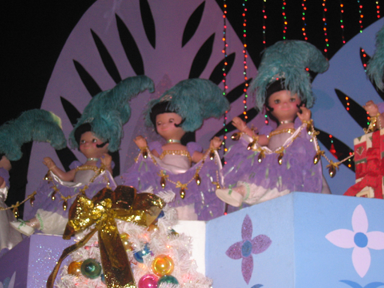
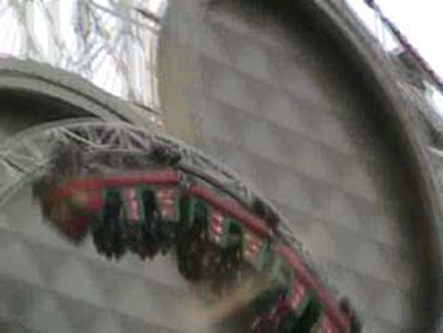
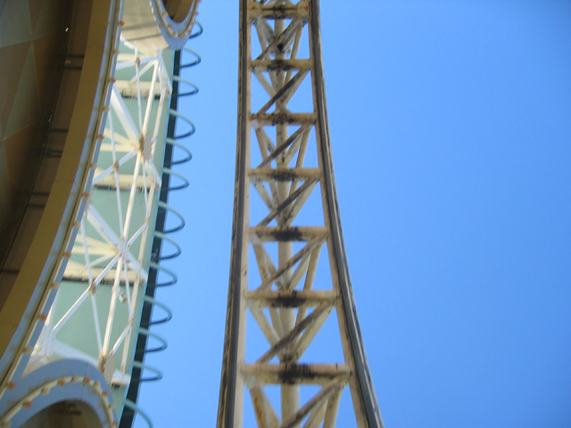

Disneyland Xmas 2006
We went to Disneyland for Christmas once again. Lots of fun and stupidity. We actually spent a day in Hollywood before the update started, so I managed to get a picture of the Famous Hollywood Sign.
We spent some time in Downtown Disney that night.
 "Grr! I'm a Giraffe! I may be made of legos, but at least I'm not stuck in Quicksand! Gimme some candy!"
"Grr! I'm a Giraffe! I may be made of legos, but at least I'm not stuck in Quicksand! Gimme some candy!"
 NO KEVIN! DON'T PULL APART THE GIRAFFE!!!!
NO KEVIN! DON'T PULL APART THE GIRAFFE!!!!
Beignets. If a dougnut and a funnel cake had sex, they'd create a Beignet!
When Space Mtn has a 15 min wait, That means that no one is at the park and plenty of rerides
Buzz Lightyear was a hit with everyone.
Any ride that takes you to hell gets an automatic A by Incrediblecoasters Standards.
Small World. More annoying than Toybox and Aqua put together!
2007. Expect great Things.
OMG! Yo no gusta Espanol!
How can that guy be surfing? There are no waves in Hawaii!

Hooray for Dancers!
Yummy! Pies are good!
Wheres Andrew?
Vekoma Rollerskaters are always fun!
Its a Boomerang, Its an SLC! No its a POV!
Vekomas are awsome!
 The Halsteds get to enjoy the worlds first steel coaster.
The Halsteds get to enjoy the worlds first steel coaster.
Hooray for Airtime! Hooray for the Abominabal Snowman! Hooray for straight track!
 All Drop Towers are fun!
All Drop Towers are fun!
OH MY GOD! We're getting soaked!
As you can see by Celeste and Tara's reaction, there is A GHOST FOLLOWING THEM!!!!!!!!!!!!
 Many websites said tha CA Screamin got its loop replaced...
Many websites said tha CA Screamin got its loop replaced...
 But they tore the old loop down and put in the new loop in 3 days. Hey Disney, Maybe you should redo all of your rides that quickly. *cough* Space Mtn took 3 *cough* years. Hey Six Flags, I think it's about time X reopened.
But they tore the old loop down and put in the new loop in 3 days. Hey Disney, Maybe you should redo all of your rides that quickly. *cough* Space Mtn took 3 *cough* years. Hey Six Flags, I think it's about time X reopened.

One highlight of this trip is...
 Celeste popped her launch cherry and her inverson cherry! And she loved it!
Celeste popped her launch cherry and her inverson cherry! And she loved it!
 CA Screamin is fun!
CA Screamin is fun!
 Issac and Andrew will both be very happy to hear tha DCA is getting Dirt! The Ride for 2007! Right under Screamin!
Issac and Andrew will both be very happy to hear tha DCA is getting Dirt! The Ride for 2007! Right under Screamin!
 Theres a little bit of floater air on the bunny hops, But CA Screamin will never be as good as it originally was.
Theres a little bit of floater air on the bunny hops, But CA Screamin will never be as good as it originally was.
 0 to 55 mph in 3 seconds! Thats better than Supermans 0 to 100mph launch in 7 seconds.
0 to 55 mph in 3 seconds! Thats better than Supermans 0 to 100mph launch in 7 seconds.
 All drops are fun. Especially those with a shed!
All drops are fun. Especially those with a shed!

For a loop thats less than 2 weeks old, thats alot of rust!
The next day, we ate at Goofys Kitchen.
With hot blonde chicks at every table!
"YOU WILL SHUT UP AND YOU WIL SMILE FOR THE DAMN PICTURE!!!!"
"See, Isn't it better when we all cooperate?"
Welcome to Goofys Kitchen! You can eat as much as you want until we're sick of you and kick you out!
Disneyfreaks, I need your help. Is this Chip or Dale? I can't tell.
I look sexy in a beanie! (Is it me or does it look like Allie is flipping me off?)
Its 40 degrees and We're going to ride Splash Mtn!
I'm not sure what did more damage, The Water or the Arrowness.
We'll end this update at Haunted Mansion.
Merry Christmas. Happy New Year. Good Bye!!!
Home